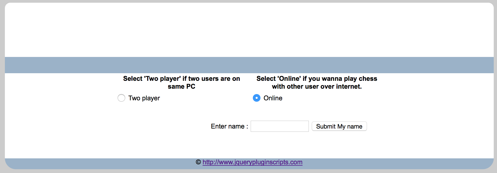
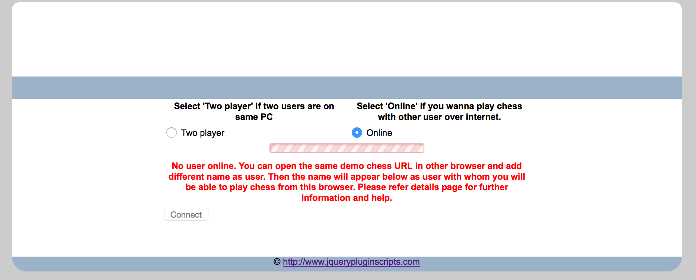
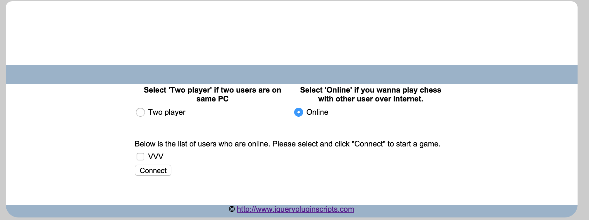
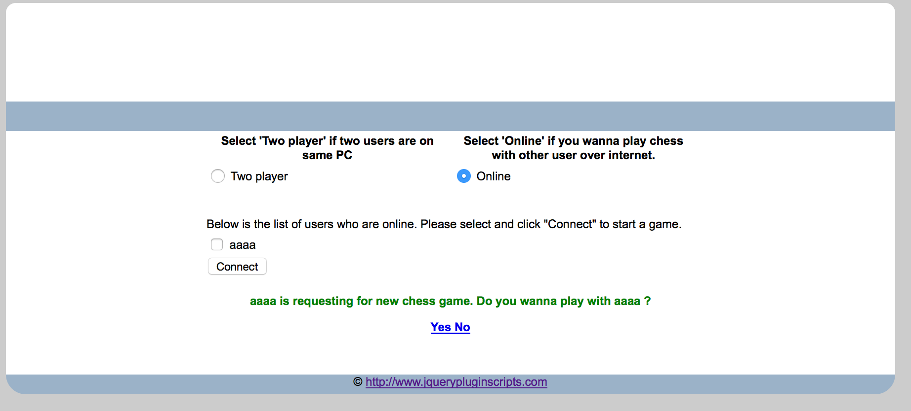
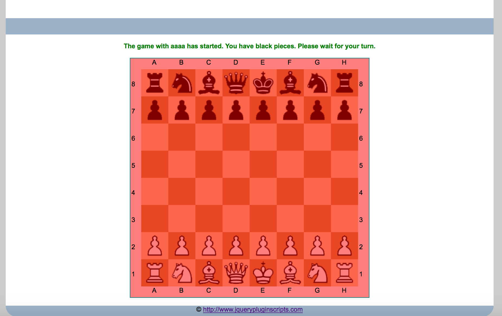
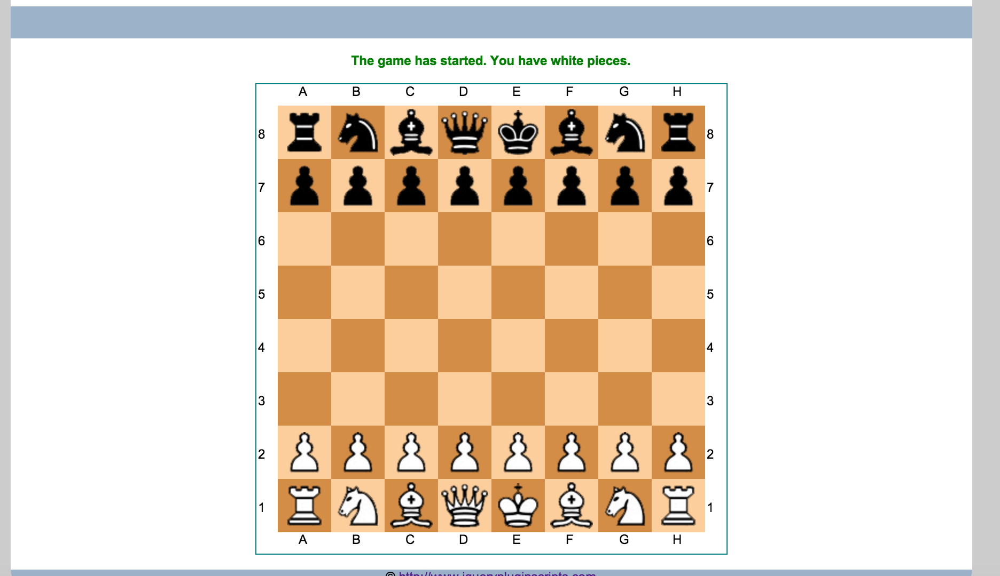

Chess
This game allowed to play chess either on same machine or online.
- Play chess on same machine
- Go to here
- Choose option Two Player
- Start playing chess alternatively.
- Note: This type of game that both users on same machine
- Play chess online
- Go to here
- Choose option Online. Then enter your name and click on "Submit My name". You will now be added to online users' list.

- As no user is enrolled so far except you, below message will appear.

- Now, open same URL in another browser and follow steps from 1 to 3. You should be able to see the first user enrolled in online users' list. Check the check box in front of the online user and press Connect button. Now, the game request will be sent to the other user.

- Go to second browser, where you should be able to see the game request sent by first user. Click on Yes link to start the game.

- The user with black pawns will have to wait for his turn.

- Meanwhile, user with white pawn can make first move.
